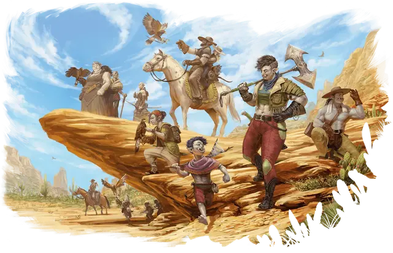

Орк
Orc

Тип существа Гуманоид
Размер Средний (рост около 6-7 футов)
Скорость 30 футов
Орки ведут своё сотворение от Груумша, могущественного бога, который бродил по широким просторам Материального плана. Груумш снабдил своих детей дарами, помогающими им бродить по великим равнинам, обширным пещерам и бурлящим морям, и выживать во встречах с чудовищами, там обитающими. Даже когда орки обращают свою преданность к другим богам, они сохраняют дары Груумша: выносливость, решительность, способность видеть в темноте.
Орки обычно высокие и широкоплечие. У них серая кожа, сильно заострённые уши и выступающие нижние клыки, напоминающие небольшие бивни. В некоторых мирах молоди орков рассказывают о великих путешествиях и невзгодах их предков. Вдохновлённые этими рассказами, многие из этих орков задаются вопросом, когда Груумш призовёт их повторить героические деяния древности, и окажутся ли они достойны его благосклонности. Некоторые из орков рады оставить старые сказки в прошлом и искать свой собственный путь.
Особенности
Вы обладаете следующими особенностями вида:
Выброс адреналина. Вы можете Бонусным действием совершить действие Рывок. Когда вы делаете это, вы получаете Временные хиты в количестве, равном вашему Бонусу владения. Вы можете использовать эту особенность количество раз, равное вашему Бонусу владения. Вы восстанавливаете все потраченные использования по завершению Короткого или Долгого отдыха.
Тёмное зрение. У вас есть Тёмное зрение дальностью 120 футов.
Непоколебимая стойкость. Когда ваши Хиты снижаются до 0, но вы не убиты мгновенно, вы можете вместо этого опустить ваши Хиты только до 1. Как только вы используете эту особенность, вы не сможете сделать это снова, пока не завершите Долгий отдых.